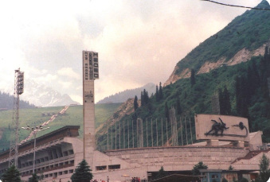
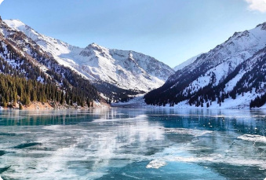
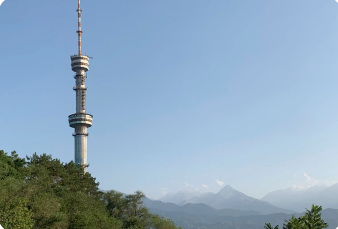

MEDEU
HIGH MOUNTAIN SKATING RINK
Mountain adventure · ★ 4.8DISCOVER THE CITY
Mountains, lakes, and breathtaking views.

HIGH MOUNTAIN SKATING RINK
Mountain adventure · ★ 4.8
BEAUTIFUL MOUNTAIN LOCATION
Nature escape · ★ 4.9
PANORAMIC VIEW OF ALMATY
City viewpoint · ★ 4.7YOUR NEXT ADVENTURE
Kok Tobe → Panfilov Park → Green Bazaar
Medeu → Shymbulak → Scenic mountain viewpoints
Big Almaty Lake → Mountain photo stops
TRAVEL SMART
Bring layers and check mountain forecasts before heading out.
Plan extra time for mountain roads and use official transport services.
Carry water, share your route, and use marked hiking trails.
MAKE IT YOURS
Choose your route and group size. Create a printable PDF checklist for your adventure.
Emergency services: 112 (Kazakhstan)